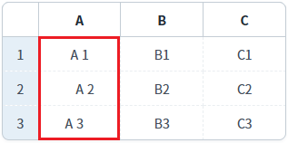
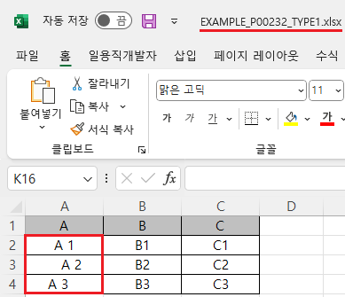
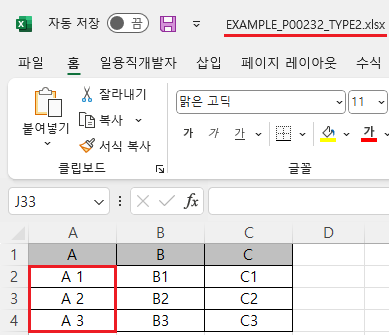

GridView의 'advancedExcelDownload' 메소드의 첫 번째 인자인 JSON 객체의 'trim' 속성을 사용하여, 엑셀 다운로드 시 셀 데이터의 좌우 공백이 제거되도록 설정한 예제입니다.
'trim' 속성의 기본 값은 'false'이며, 'true'로 설정하면 데이터의 좌우 공백을 제거할 수 있습니다.
엑셀 다운로드 - 기본 동작
엑셀 다운로드 - 데이터 좌우 공백 제거
1
STEP 1: 초기 상태 확인하기
GridView의 'A' 컬럼의 데이터에 좌우 공백이 포함되어 있습니다. 이 컬럼은 좌우 공백이 화면에 표시되도록 별도의 'class'가 설정된 상태입니다.
Image 1.브라우저(Chrome) 실행 예시

2
STEP 2: '엑셀 다운로드 - 기본 동작' 버튼을 클릭합니다.
'EXAMPLE_P00232_TYPE1.xlsx' 엑셀 파일이 다운로드 됩니다.
3
STEP 3: 실행된 결과를 확인합니다.
다운로드 된 'EXAMPLE_P00232_TYPE1.xlsx' 엑셀 파일을 실행합니다.
'A' 컬럼의 데이터에 좌우 공백이 포함되어 있습니다.
Image 2.다운로드된 엑셀(2021) 파일 예시

1
STEP 1: 초기 상태 확인하기
GridView의 'A' 컬럼의 데이터에 좌우 공백이 포함되어 있습니다.
Image 3.브라우저(Chrome) 실행 예시
2
STEP 2: '엑셀 다운로드 - 데이터 좌우 공백 제거' 버튼을 클릭합니다.
'EXAMPLE_P00232_TYPE2.xlsx' 엑셀 파일이 다운로드 됩니다.
3
STEP 3: 실행된 결과를 확인합니다.
다운로드 된 'EXAMPLE_P00232_TYPE2.xlsx' 엑셀 파일을 실행합니다.
'A' 컬럼의 데이터에 좌우 공백이 제거되어 있습니다.
Image 4.다운로드된 엑셀(2021) 파일 예시

1
'advancedExcelDownload' 메소드를 사용하여 설정합니다.
Example 1.Script
//예제 파일의 스크립트 "scwin.btn_ex2_onclick"를 참고하세요. var jsnOptions = { fileName: "EXAMPLE_P00232_TYPE2.xlsx", //엑셀의 파일명 trim : "true" //데이터 좌우 공백 제거 }; //options.trim <String:N> [default: false] gridView 데이터를 좌우 공백 적용 유무 (true 설정 시 공백 제거 후 적용) //GridView "grd_exam1"의 엑셀 다운로드 실행 grd_exam1.advancedExcelDownload(jsnOptions);
advancedExcelDownload( options , infoArr )
options.trim